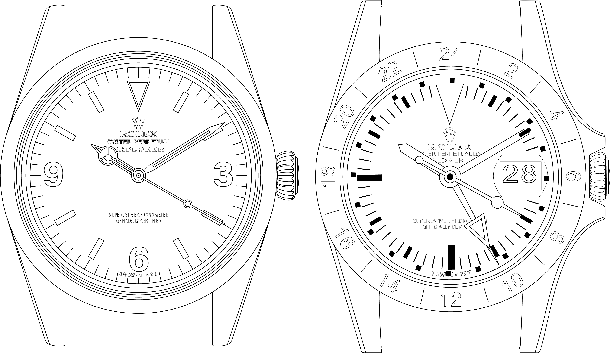
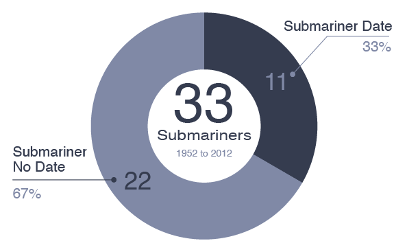
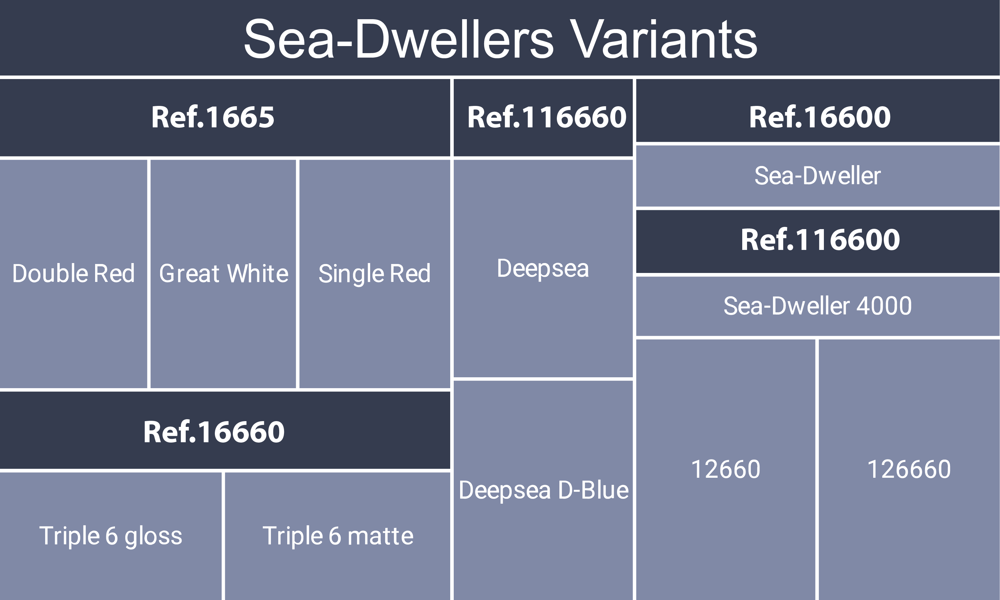

How to Find, Price, & Buy Vintage Rolex
Buying a new stainless steel sports Rolex is hard irrespective of how much money you have or who you might know.
Buying a vintage Rolex is an order of magnitude more challenging.
MORNINGTUNDRA | August 2020The market in 2020 is more competitive and challenging than ever before, despite economic and public health problems (source: Research & Markets). While short term interest and prices may have softened, long term demand and prices continue to trend upwards - as have unscrupulous market participants.
Like never before, buyers have to contend with flippers, unscrupulous watchmakers, thieves, scammers, and outright counterfeiters. And then there are the watches themselves with their questionable condition, correctness, and authenticity.
Perhaps because of these very challenges, vintage Rolex has remained so highly prized and desirable. And in some circles, even more so than the hard to buy new ones. The gradually declining global inventory, and steadily rising prices make for an intoxicating mix of scarcity and urgency which quickly clouds common sense and judgment.
1. Learn What Was Made
Step One in acquiring one of these prized watches is to know what was made. Enter the new Vintage Rolex Field Manual Chevalier Edition - a comprehensive catalog of models and specifications, written for both buyers and sellers.
While only Rolex knows the exact production volume, collectors and archivists know what models were made and when. We also have a good idea of the variations in each model reference, along with which movements and calibers they would have contained.
The most desirable and collectable vintage Rolex today are sporting models contained in what is currently known as the Professional Collection. There are ten model lines in the Professional Collection, numbering 196 distinct references that are out of production. Each reference has sub-variants with small differences that can command disproportionate price variations.
| Model Line | Distinct References |
|---|---|
| Submariner | 43 |
| Daytona | 34 |
| Air-King | 27 |
| Yacht-Master | 23 |
| Explorer | 18 |
| GMT-Master II | 15 |
| GMT-Master | 13 |
| Sea-Dweller | 11 |
| Explorer II | 6 |
| Milgauss | 6 |
Within each model line, there are numerous reference variations to contend with. Their production periods, presumed production volume, and prices can vary widely despite their microscopic cosmetic differences.
2. Use Data To Your Advantage
Take for example the popular Explorer, designed for mountaineers and speleologists with the 24 model variants. In addition to the two major variations with their widely different aesthetics and complications, six references were dual-branded with the Air-King.
These dual-branded references can be very challenging to assess for correctness and authenticity. Many were modified during their lives having their dials changed from Air-King to Explorer and even back again.
Learn more about these dual-branded references, their challenges and details in Chapter 7.


3. Explore Beneath The Caseback
Also to consider are the movements. A model seemingly uniform like the Submariner, could have one of 14 different movements. Some of these movements shared interchangeable parts, and others shared entirely interchangeable movements. This can make it almost impossible to determine if a movement was the one the original watch left the factory with. Or whether it is a transplant, known in the trade as a franken-watch (made up from spare parts).
Buyers and collectors need to have some sense of what these movements look like and how to identify them, including the tell-tale signs of good or poor maintenance. Chapter 11 will provide this insight without actually turning you into a watchmaker.




When considering a Rolex Submariner, it's important to understand the overlapping history with the less famous Rolex Sea-Dweller. This lesser-known dive-watch has an equally well-deserved reputation as an elite tool watch.
Like the Rolex Submariner, it has its own nicknames, variations, and nuances. Many would argue this is the more serious and collectible of the dive watches, while others warn it can be harder to wear casually on smaller wrists.
While some Submariner references can lay claim to military and commando provenance, the Sea-Dweller was a mainstay for professional saturation divers and deep-sea exploration. Each has a different emotional appeal to different collectors. Both are hotly sought after and have experienced strong price appreciation.
4. Condition, The King With No Clothes
In addition to knowing if a vintage Rolex has “all the right bits,” it is necessary to know how to assess condition. Not only what to look at, but also to know what can be done to restore a distressed watch and hide past damage. A heavily distressed watch can be restored and refinished to be indistinguishable from a premium condition example, so prized by elite collectors. Chapters 2 and 5 will arm you with what you need to know.
There is no quantitative scale to measure condition. This remains a personal and subjective assessment. With such strongly held opinions and ongoing debate surrounding this topic, you would think there was more science behind this.
The relative beauty of production defects like spider-dials, and the damage so quaintly described as patina, fills countless forums and Instagram feeds. At the end of the day, beauty is in the eye of the beholder and the only condition that matters is the buyers' opinion.
.jpg)
The Vintage Rolex Field Manual
Hard Cover Chevalier Print Edition
ISBN: 978-0578630823
Size: 8.5 x 0.9 x 11 inches
Weight: 2.5 lbs
Format: Hardcover
Published: 2020
5. What To Do Next
At US$ 85.00 The Vintage Rolex Field Manual Chevalier Edition is a modest investment for a comprehensive education that could save you tens of thousands of dollars in expensive mistakes. It will introduce you to some well known and trusted professionals in the vintage Rolex industry. They will provide a starting point in your journey and help you reach your goals and find your first, next or last vintage Rolex.
Buy the book now from your favorite bookstore or right here, with free global shipping.To purchase a vintage Rolex contact
- Scott Baratz
- +1 (617) 968 7100
To restore a vintage Rolex contact
- Philip Ridley
- +1 (817) 821 2118
To refinish a vintage Rolex contact
- Mike Hui
- +1 (408) 800 3244
To relume a vintage Rolex contact
- James Hyman
- +44 754 825 2335
To service a vintage Rolex contact
- Tanner Morehouse
- +1 (701) 840 3287